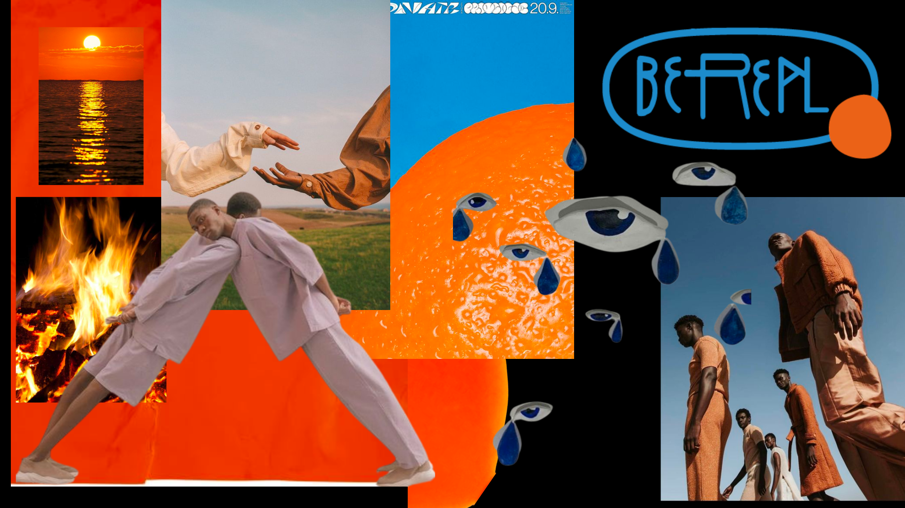

app redesign
case study
BeReal 2.0
The aim of the project was to redesign an existing app, provinding the final product with a new and improved look and feel. In order for this project to be succesfull, there had to be a deep knowledge of the app and how users interacted with it. There was some shocking data such as:
There are +53.000.000 downloads but only 4.770.000 users
Only 1 out of 10 BeReal users opens the app once a day
Looking at all this research, we came to the conclusion that there were several problems happening at the same time. As seen in the previous project, we had already introduced ReChallenge, a way of getting users to interact more with the app, trying to solve one of our main issues...ENGAGEMENT... But in a graphic aspect, BeReal was still being an app without an identity. Without a defined arquetyp, which advocates for realness and authenticity, but its just another social media app.
From here the new design for BeReal is born. An app with a new De ahí nace el nuevo diseño de BeReal. An app with its own personality, sociable, original, active and enthusiastic.